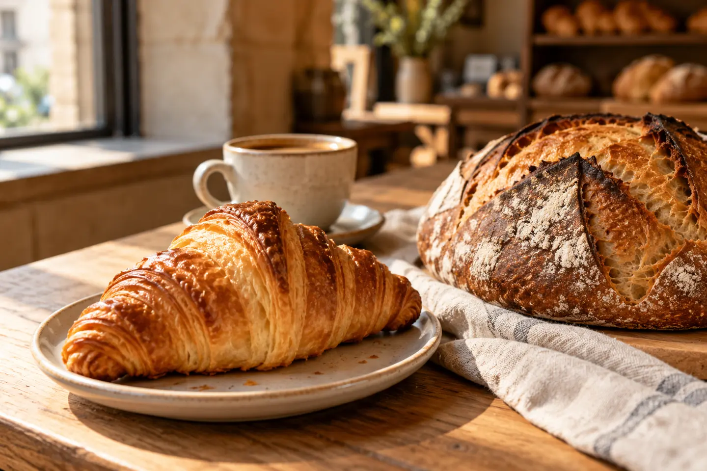
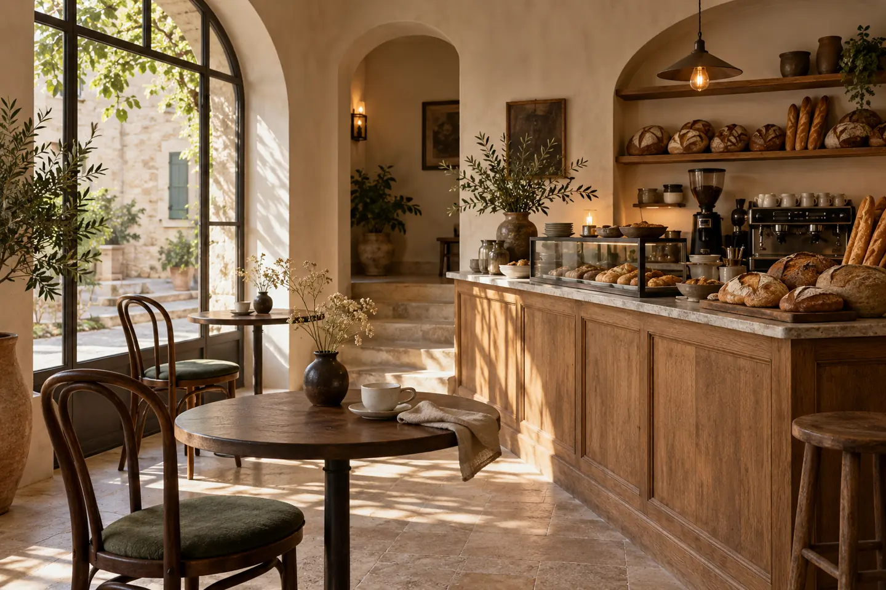

Le pain de la maison
Levain naturel, croûte dorée et mie généreuse.
5,50 €La pièce
BOULANGERIE · CAFÉ · ART DE VIVRE
Le pain encore tiède. Le premier café.
Et cette envie de rester un peu.

Du four à la tasse, le goût du vrai.
LES ESSENTIELS
Une carte courte, des recettes généreuses.
Nos petits rituels, du petit-déjeuner à la pause café.
Carte et prix imaginés pour ce concept.

L’ESPRIT MAISON AUBE
Il y a les endroits où l’on passe.
Et ceux où l’on se sent bien.
Maison Aube imagine une boulangerie de quartier où le pain prend son temps, où le café se savoure et où chaque détail a sa place.
Du bois, de la lumière, des recettes simples. Une invitation à retrouver le plaisir des choses bien faites.
Ce qui nous animeNOTRE MANIFESTE
01
Le levain repose. Les arômes se développent. Les bonnes choses ne se pressent pas.
02
Une farine bien choisie, une cuisson précise, un café préparé avec attention.
03
Se retrouver, échanger ou savourer un moment pour soi. Ici, chacun a sa place.
« Les meilleurs moments
commencent souvent
par des choses simples. »
L’ESPRIT MAISON AUBE
LE RENDEZ-VOUS DES MATINS
Un café au comptoir. Un croissant à emporter.
Un dimanche qui s’étire.
Concept de boulangerie imaginé à Bayonne.
Maison Aube n’est pas une boutique ouverte au public.
HORAIRES DU CONCEPT
Horaires illustratifs. Aucune commande ni réservation réelle.
LES PETITES QUESTIONS
Le concept met à l’honneur le pain au levain naturel et une fermentation lente. Les produits présentés sont illustratifs.
Ce projet présente un site vitrine. Les commandes et les paiements ne sont pas activés.
Maison Aube est une marque fictive créée par Sara Branco pour présenter un site WordPress sur mesure. Les visuels sont générés pour ce concept.